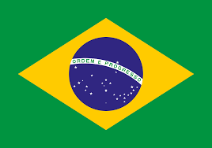
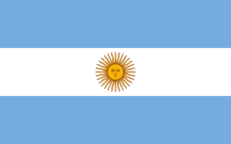
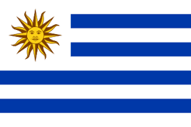
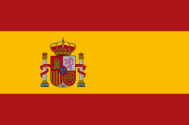
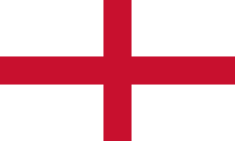

História da Copa do Mundo
Títulos por Seleção

Brasil
5 Títulos
1958, 1962, 1970, 1994, 2002

Alemanha
4 Títulos
1954, 1974, 1990, 2014

Itália
4 Títulos
1934, 1938, 1982, 2006

Argentina
3 Títulos
1978, 1986, 2022

França
2 Títulos
1998, 2018

Uruguai
2 Títulos
1930, 1950

Espanha
1 Título
2010

Inglaterra
1 Título
1966
Todos os Campeões da Copa do Mundo
| Ano | País Sede | Campeão | Placar Final | Vice-Campeão |
|---|---|---|---|---|
| 1930 | Uruguai | Uruguai | 4-2 | Argentina |
| 1934 | Itália | Itália | 2-1 | Tchecoslováquia |
| 1938 | França | Itália | 4-2 | Hungria |
| 1950 | Brasil | Uruguai | 2-1 | Brasil |
| 1954 | Suíça | Alemanha Ocidental | 3-2 | Hungria |
| 1958 | Suécia | Brasil | 5-2 | Suécia |
| 1962 | Chile | Brasil | 3-1 | Tchecoslováquia |
| 1966 | Inglaterra | Inglaterra | 4-2 | Alemanha Ocidental |
| 1970 | México | Brasil | 4-1 | Itália |
| 1974 | Alemanha Ocidental | Alemanha Ocidental | 2-1 | Holanda |
| 1978 | Argentina | Argentina | 3-1 | Holanda |
| 1982 | Espanha | Itália | 3-1 | Alemanha Ocidental |
| 1986 | México | Argentina | 3-2 | Alemanha Ocidental |
| 1990 | Itália | Alemanha Ocidental | 1-0 | Argentina |
| 1994 | EUA | Brasil | 0-0 (3-2 pen) | Itália |
| 1998 | França | França | 3-0 | Brasil |
| 2002 | Coreia/Japão | Brasil | 2-0 | Alemanha |
| 2006 | Alemanha | Itália | 1-1 (5-3 pen) | França |
| 2010 | África do Sul | Espanha | 1-0 | Holanda |
| 2014 | Brasil | Alemanha | 1-0 | Argentina |
| 2018 | Rússia | França | 4-2 | Croácia |
| 2022 | Catar | Argentina | 3-3 (4-2 pen) | França |
Artilheiros de Cada Copa do Mundo
| Ano | Jogador | País | Gols |
|---|---|---|---|
| 1930 | Guillermo Stábile | Argentina | 8 |
| 1934 | Oldřich Nejedlý | Tchecoslováquia | 5 |
| 1938 | Leônidas | Brasil | 7 |
| 1950 | Ademir | Brasil | 8 |
| 1954 | Sándor Kocsis | Hungria | 11 |
| 1958 | Just Fontaine | França | 13 |
| 1962 | Garrincha, Vavá, etc. | Brasil/Outros | 4 |
| 1966 | Eusébio | Portugal | 9 |
| 1970 | Gerd Müller | Alemanha Oc. | 10 |
| 1974 | Grzegorz Lato | Polônia | 7 |
| 1978 | Mario Kempes | Argentina | 6 |
| 1982 | Paolo Rossi | Itália | 6 |
| 1986 | Gary Lineker | Inglaterra | 6 |
| 1990 | Salvatore Schillaci | Itália | 6 |
| 1994 | Hristo Stoichkov | Bulgária | 6 |
| 1994 | Oleg Salenko | Rússia | 6 |
| 1998 | Davor Šuker | Croácia | 6 |
| 2002 | Ronaldo | Brasil | 8 |
| 2006 | Miroslav Klose | Alemanha | 5 |
| 2010 | Thomas Müller | Alemanha | 5 |
| 2010 | Wesley Sneijder | Holanda | 5 |
| 2010 | David Villa | Espanha | 5 |
| 2010 | Diego Forlán | Uruguai | 5 |
| 2014 | James Rodríguez | Colômbia | 6 |
| 2018 | Harry Kane | Inglaterra | 6 |
| 2022 | Kylian Mbappé | França | 8 |
Estatísticas Gerais
Maiores Campeões
Brasil - 5 títulos
Alemanha - 4 títulos
Itália - 4 títulos
Maiores Artilheiros
Miroslav Klose - 16 gols
Ronaldo - 15 gols
Gerd Müller - 14 gols
Recordes
Mais partidas: Lionel Messi - 26
Mais gols em uma edição: Just Fontaine - 13
Gol mais rápido: Hakan Şükür - 10.8s